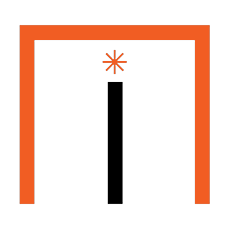
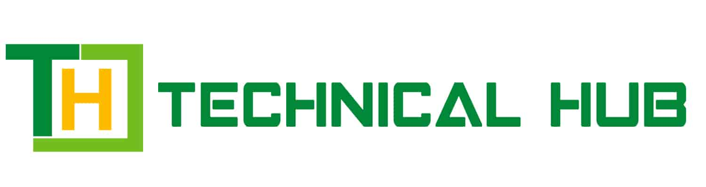
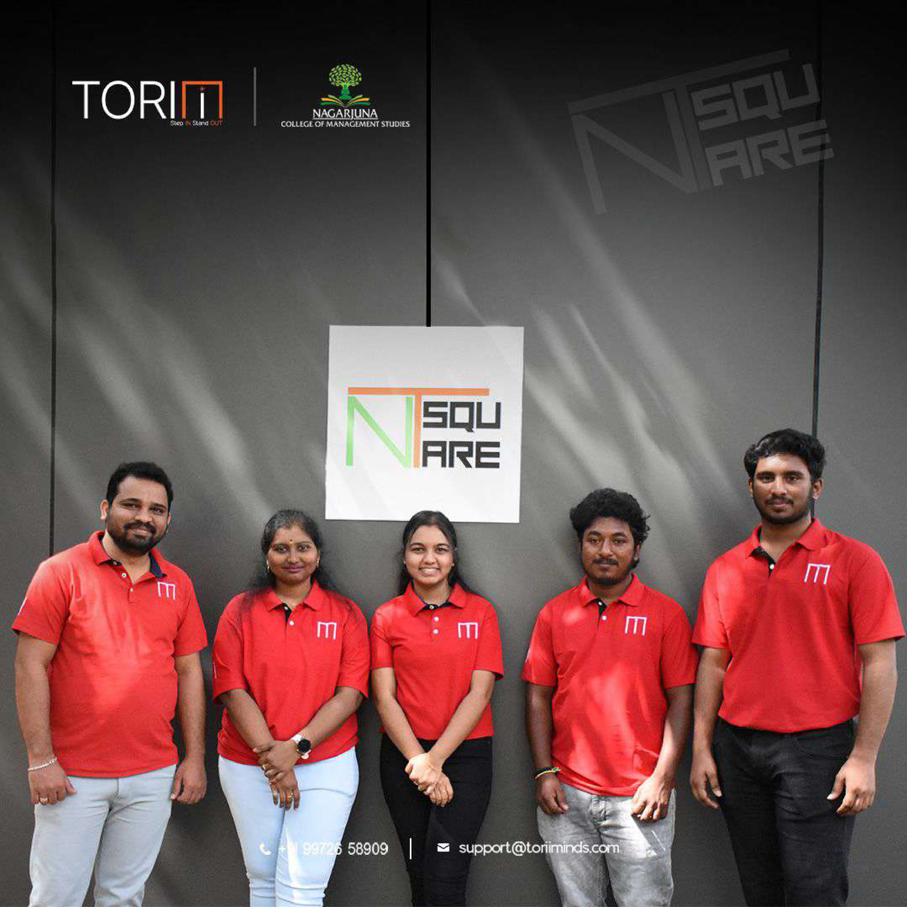
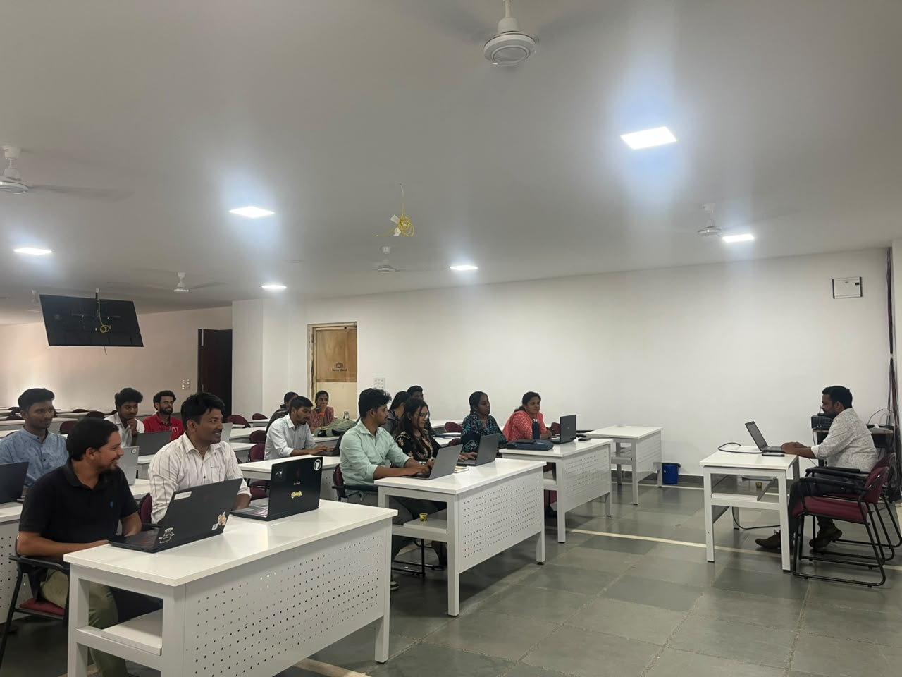

Context-Aware Code Assistance
Rapid codebase exploration, complex refactoring operations, and microservice creation — effectively minimising cognitive load.
A strategic train-the-trainer and developer-enablement partnership that turned abstract AI potential into concrete developer workflows — and structurally rewrote Torii's productivity capacity.

×
In a rapidly shifting technological landscape, staying competitive requires workforce models that evolve as quickly as the tools they support. Recognising this, Torii entered a strategic alignment with Technical Hub to fundamentally transform its corporate execution, training frameworks, and engineering output.
Technical Hub has been instrumental in deeply training and upskilling the Torii team with specialised, Claude-relevant competencies. Today, as a direct result of this partnership, our workforce is fully prepared to deliver high-tier corporate trainings that align perfectly with modern, rigorous industry standards. By turning abstract AI potential into concrete developer workflows, Technical Hub has structurally augmented Torii's organisational performance and operational market speed.

The Torii delivery team — fully certified & enterprise-readyTo scale Torii's market reach, Technical Hub designed an intensive train-the-trainer framework centred around Claude's robust model architecture and capabilities. Before this intervention, delivering cutting-edge AI guidance meant navigating disjointed syllabi and unvetted materials. Technical Hub eliminated that barrier with a comprehensive, standardised upskilling path.

Dedicated, isolated technical tracks for core developersBeyond empowering Torii's instructional personnel, Technical Hub ran targeted, isolated technical tracks engineered specifically for our core software developers — showing engineers how to natively anchor Claude AI into their daily development environments to unlock unmatched productivity.
Rapid codebase exploration, complex refactoring operations, and microservice creation — effectively minimising cognitive load.
Prompt-driven bug localisation, automated unit-test generation, and syntax validation that drastically reduce debugging cycles.
Safely spin up minimal viable products (MVPs), turning ideas into functional logic within hours rather than days.
The systemic integration of Claude into Torii's ecosystem, via Technical Hub's frameworks, mitigated standard technical bottlenecks and reduced project-delivery timelines by a remarkable margin. Engineering overhead fell while output quality saw a measurable lift.
Bottlenecks removed across the project lifecycle.
Routine effort offloaded to AI-assisted workflows.
Consistent, reviewable, standards-aligned output.
All practices are now natively AI-assisted.
Torii partners with Technical Hub to transform execution, training frameworks, and engineering output.
A standardised upskilling path built around Claude's architecture replaces unvetted materials.
Isolated technical deep-dives anchor Claude into daily engineering environments.
KPIs spike, timelines shrink, and the product pipeline is future-proofed.
By transforming trainers into industry-certified AI educators and engineers into high-velocity developers, Technical Hub didn't merely implement a tool — it structurally rewrote Torii's productivity capacity. We're now fully aligned with modern market standards, highly efficient, and ready for what's next.